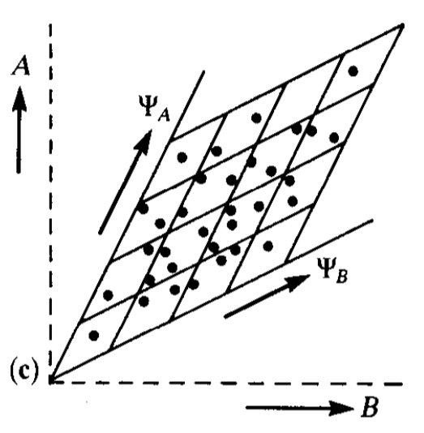
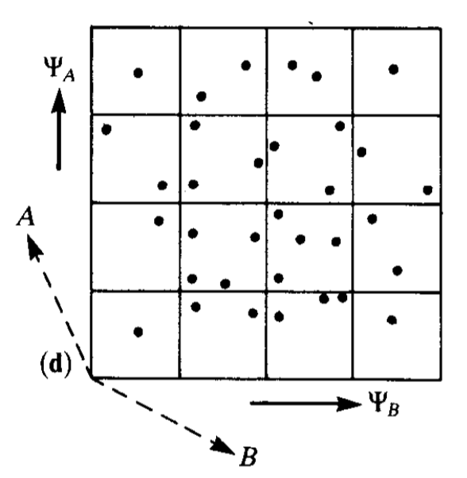
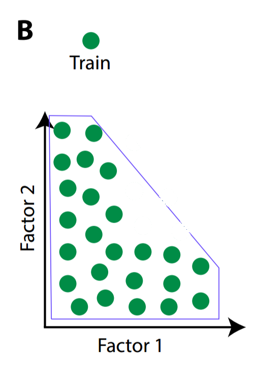
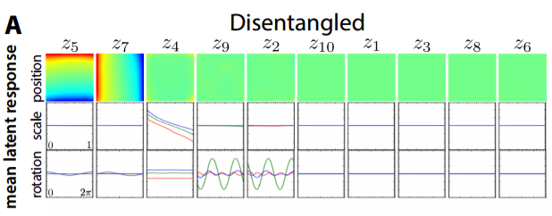
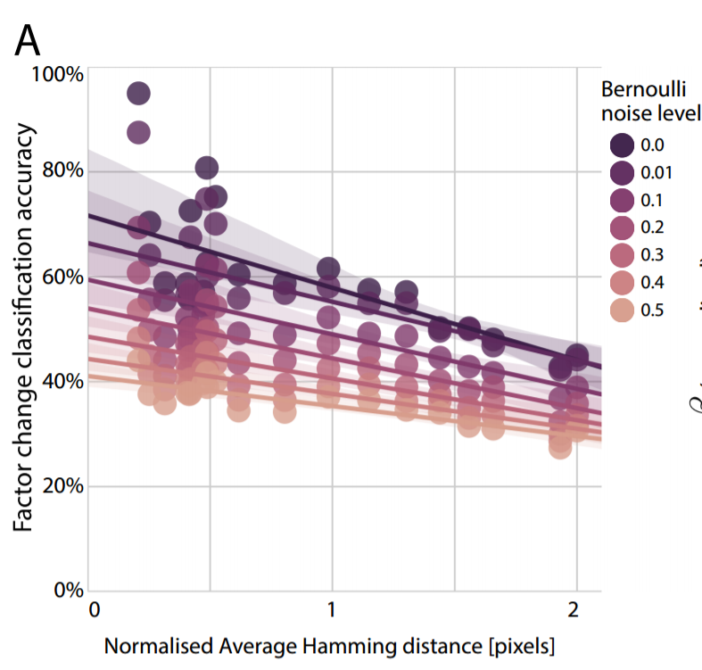
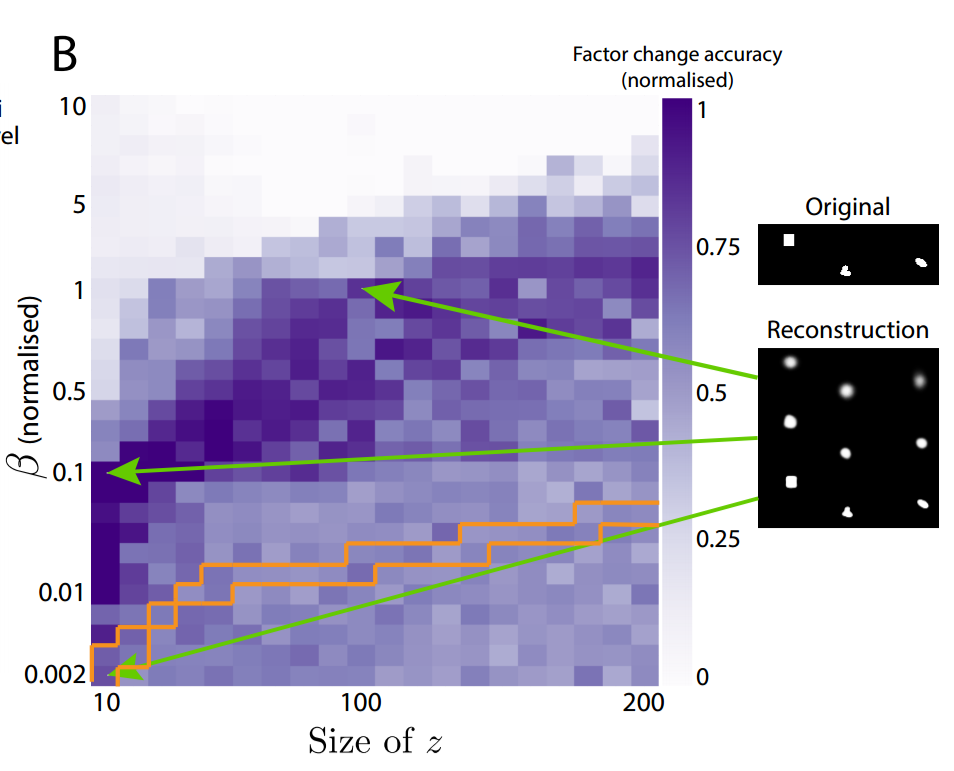

I've found that the overwhelming majority of online information on artificial intelligence research falls into one of two categories: the first is aimed at explaining advances to lay audiences, and the second is aimed at explaining advances to other researchers. I haven't found a good resource for people with a technical background who are unfamiliar with the more advanced concepts and are looking for someone to fill them in. This is my attempt to bridge that gap, by providing approachable yet (relatively) detailed explanations. In this post, I explain the titular paper - Early Visual Concept Learning with Unsupervised Deep Learning.
Motivation
There's a fascinating talk by Josh Tenebaum in which he cites a number of studies demonstrating that within months of being born, human infants develop rudimentary understanding of physical objects, intentional agents and their interactions. From a computational perspective, this is a remarkable accomplishment. These infants' internal models of the world are developed in an unsupervised manner, prior to language acquisition. Although Tenebaum's ultimate point was that computer scientists and statisticians can learn much about the development of intelligence through research in childhood cognitive development, the more specific question of how human infants are capable of even beginning to extract early visual concepts without supervision went unanswered.
Higgins et al.'s paper aims to answer this question. To do so, they draw inspiration from prior neuroscience work studying the visual ventral stream, a component of a widely accepted model1 of how visual information is converted to object recognition and form representation. They use this work to formulate a computational argument for what an unsupervised visual learning system needs, and provide prima facie evidence that their argument is valid by implementing such a system.
Background
A good approach to understand Higgin et al.'s paper is to start with the two key neuroscience papers that inspired Higgin et al.'s work.
Paper #1 - Continuous transformation learning of translation invariant representations (2009)
One well-understood aspect of human visual processing is that over time, certain neurons learn to respond to specific visual stimuli, regardless of deformations of those stimuli. At the start of the paper Perry, Rolls and Stringer write, "Over successive stages, the visual system develops neurons that respond with position (i.e. translation), view, and size invariance to objects or faces. For example, it has been shown that the inferior temporal visual cortex has neurons that respond to faces and objects invariantly with respect to translation, size, contrast, lighting, spatial frequency."
In the literature's terminology, we refer to this recognition as a translation invariant representation. Learning translation invariant representations is a critical component of unsupervised learning. One can easily intuit why - consider how difficult understanding the world would be if you or I couldn't understand that an object and same object moved slightly to the left or rotated 90 degrees are one and the same.
Perry et al.'s contribution is to demonstrate that a system can learn translation invariant representations in an unsupervised manner by using a specific sampling technique. This sampling technique is relatively straightforward: densely sample from continuous transformations. To understand why, consider a simple neural network with only two layers and initialized with random weights. When a stimulus is presented, some of the input neurons will fire. As a consequence, perhaps an output neuron will fire, as shown below:

If we suppose that the system strengths connections after neurons fire (i.e. some kind of Hebbian learning rule), then the above connections will be strengthened. Later, if the same stimulus is presented again but shifted slightly, enough of the same input neurons will fire again that the same output neuron will fire again. However, a new input neuron will also fire, and its connection to the output neuron will be strengthened (as shown below with the dotted connection).

This learning happens without the need for any supervisory signal. With sufficiently small strides and sufficiently dense sampling, this output neuron will learn to recognize a specific stimulus regardless of where the stimulus appears in the input; Perry et al call this Continuous Transform Learning. The paper has some nice plots of how learning performance rapidly degrades as the stride increases, and their paper actually covers much more material, but I'll leave that to the interested reader to cover on her own. Higgen et al. extend Continuous Transform Learning to manifold learning, arguing that sparsely sampled data creates ambiguities when learning manifolds (below left), whereas densely sampled data reduces that ambiguity (below right).

Paper #2 - Adaptation and Decorrelation in the Cortex (1989)
You won't find this paper by Barlow and Foldiak cited in Higgin et al.'s work. I only found it because Higgin et al. cite Finding Minimum Entropy Codes by Barlow, Kaushal and Mitchison which states (paraphrased), "Go look at Barlow's other paper if you want to understand what we're doing and why." Barlow and Foldiak's paper covers a lot of material, but their key contribution is to demonstrate that decorrelating the factors underlying sensory inputs may also be important towards unsupervised learning.
What does that actually mean? When we receive some stimulus (e.g. a visual scene), that image is generated by a number of factors - the objects in the image, the color scheme of those objects, the lighting of the scene, the objects' positions relative to us, etc. Barlow and Foldiak argue that learning independent factors aids unsupervised learning. In the simplest sense, having neurons learn independent features makes the network use its available resources more efficiently. This is relatively easy to visualize. Consider two neurons that receive two correlated stimuli, A and B. As the plot below shows, many distinguishable response states (i.e. squares) will never occur.

However, if the neurons learn responses $\Psi_A$ and $\Psi_B$ in a way that decorrelates A and B, then every distinguishable response state will occur and the network will be able to more accurately discern specific stimuli. This is demonstrated in the two figures below. The first figure displays two neurons learning new response axes (that are oblique projections). In the second figure, we can see that the new responses axes give the network a stronger capability to distinguish stimuli.
 
In a more advanced sense, learning independent features is critical for generalizing understanding to new inputs. Higgins et al. provide an intuitive visual explanation for why this might be the case. Consider a baby trying to learn to recognize a fixed-radius green circle that is defined by two factors: x position and y position. Suppose the baby is shown circles with different (x, y) pairs, but the training examples are sampled from only specific combinations of x and y coordinates (i.e. the baby is not given data from outside a blue convex training hull).

But sometime in the infant's future, it may encounter circles that have been sampled from outside the convex training hull. We'll call the previously-unseen data zero-shot transfer, because we're exploring the infant's ability to transfer recognition of previously-seen circles to never-before-seen circles.

In order to recognize these new circles, the baby must be capable of recombining factors in novel ways to recognize data from outside the training hull. This necessitates separating the x-coordinate from the y-coordinate.
Intuition
To summarize, we'd like to create a system that can start to recognize objects in visual stimuli in an unsupervised manner. We've heard two suggestions for how this unsupervised learning can occur: first, learn translational invariant representations, and second, learn independent factors underlying those those representations. How can we do this computationally?
Higgins et al.'s answer is a tool introduced by Kingma and Welling in 2014 called Variational Autoencoders (VAEs). VAEs are like a rabbit hole that you fall down and emerge a long way from where you started. At a high level, a VAE is a special type of autoencoder (AE). An autoencoder is a pair of neural networks used in an unsupervised setting, in which the first network (the encoder) reduces the dimensionality of the input and the second network (the decoder) restores the dimensionality of the propagating information back to the dimensionality of the input; the two networks are then jointly trained to match the output to the input. A VAE is a much more sophisticated version of an autoencoder, with a theoretical basis in Bayesian inference, but the practical difference is that the nodes in the middle (at the bottleneck layer) are pressured to be close to zero and independent from one another. This will help the network learn the minimum number of independent latent variables, which will achieve the second goal. Then, we can train the VAE using densely sampled inputs, which will achieve the first goal.
At this point, I'll offer you a choice. The prior paragraph should give you sufficient intuition to understand the rest of the paper, in which case, you can skip ahead to Experiments and Results. But if you want to better understand VAEs, feel free to read my paraphrasing of Carl Doersch's excellent tutorial.
Mathematics
In order to understand VAEs, we'll need to understand the two fields that VAEs originate from:
Autoencoders
Visually and mathematically, autoencoders are relatively simple. The encoder is a neural network that learns a function $\mathcal{E}$ that maps from some input space to a lower dimensional space, and the decoder is a neural network that learns a function $\mathcal{D}$ that maps from the lower dimensional space to the input space. Stealing Wikipedia's picture:

The two networks are trained in tandem to minimize the distance between the input $x$ and the decoder's output $(\mathcal{D} \circ \mathcal{E})x$. If $x \in R^n$, $z \in R^m$, $n > m$, and $d(\cdot, \cdot)$ is a distance function, then the optimal encoder function $\mathcal{E}^*$ and the optimal decoder function $\mathcal{D}^*$ are understood as follows:
Directed Probabilistic Models
Graphical models are a tool for solving problems in which we have a number of random variables and we would like to infer the relationships between them. For example, suppose we have a number of images and we would like to categorize them. Let's use the random variable $z$ to specify which class (e.g. airplane, dog) an image belongs to, and the random variable $x$ to describes what an image looks like (e.g. real values for a 32x32x3 color image). One could reasonably assume that the class label influences the values that $x$ can take - that is, it's much more likely for an image labeled "plane" to contain a winged white cylindrical body than an image labeled "dog."
Assuming that the class label has a parametric distribution, we can describe the probability of a particular label class with a prior probability distribution parameterized by $\theta$, $p_\theta(z)$. Similarly, $x$ has its own distribution, $p_\theta(x)$. Since class labels influence the probability of specific images, we can describe the influence of a label on an image with the likelihood probability $p_\theta(x|z)$ and then graphically depict this scenario like below (ignore the box and the $N$):

However, in some cases, we don't have the luxury of directly observing all the variables. For instance, we might be given a new image but the corresponding class label is withheld. In cases like these, we'd like to use the observable variable $x$ and the posterior distribution $p_\theta(z|x)$ to infer the value of the hidden variable $z$, often referred to as the latent variable.
However, frequently, posterior distributions are analytically intractable and must be approximated. Why? Let's start with the definition of the posterior distribution:
In order to compute the marginal distribution $p_\theta(x)$, we would need to compute the following integral (assuming $z$ is continuous):
If $z$ is continuous or the conditional probability distribution is complicated or the data is large, which is frequently the case for interesting problems, that integral may not have an analytical solution. In such cases, the posterior distribution $p_\theta(z|x)$ may need to be approximated.
As Blei, Kucukelbir and McAullife explain, for decades, the dominant approach was to use Markov Chain Monte Carlo (MCMC) sampling. This basically means generating lots and lots of samples to asymptotically approximate the posterior distribution. Although MCMC sampling provides strong theoretical guarantees regarding convergence to the true distribution, convergence in complex models requires enormous numbers of samples to be drawn, which can be slow and computationally expensive.
Variational Inference (Variational Bayesian Approach)
Variational inference emerged as an alternative approach to approximating the posterior distribution that replaces sampling with optimization. Variational inference doesn't enjoy the sample asymptotic guarantees that MCMC sampling does, but it is frequently faster on large datasets and complex models. The idea is to find a good approximation for the true posterior. This is achieved by specifying a family of parametric probability distributions $Q$ parameterized by $\phi$, and then finding which member of the family has the smallest distance between the member and the true posterior:
The distribution $q_\phi(z|x)$ is our approximation to the intractable true posterior $p_\theta(z|x)$. Commonly, we use a specific distance measure called the Kullback-Leibler divergence, denoted $D_{KL}(\cdot || \cdot)$. The KL divergence measures how much the first distribution diverges from the second distribution, and is defined as follows:
(TODO: is $dz$ really the correct differential?) Recalling the definition of expected value, notice that we can redefine the KL divergence as an expectation:
Variational Autoencoders
To understand how these new "variational" parameters $\phi$ come into play, let's return to our graphical probabilistic model and modify it. The new model looks like this:

As a reminder, our goal is to infer the distributions of $z$ and $\theta$ from the observable variable $x$. The best distributions for $z$ and $\theta$ would be distributions that made our $x$ values maximally likely:
This is the same goal as maximizing the log transform of $p_\theta(x)$
How can we find the best value of $\theta$? The answer lies in an extensive manipulation of equation (1). Going back to equation (1), if we replace $p_\theta(z|x)$ using Bayes' Theorem, we reach the following equation:
The marginal distribution $p_\theta(x)$ isn't included in the expectation, as it doesn't depend on $z$. Similar to equation (1), we can group $q_\phi(z|x)$ and $p_\theta(z)$ into their own KL divergence:
Then, if we negate and rearrange, we have the resulting equation:
What does this equation actually tell us? Let's consider the left hand side first.
- The first term is a quantity that we want to maximize - the (log) probability of observing the data that we have. Unfortunately, as mentioned earlier, this is intractable.
- The second term is a measure of how far our approximation of the intractable posterior diverges from the true posterior. We want to minimize this. However, this term is also intractable, as we don't know what the posterior is and thus can't compute the KL divergence.
The brilliance of the VAE framework is that we can accomplish both intractable goals by maximizing the right hand side, which is tractable using common optimization algorithms (e.g. SGD, Adam).
- The third term is the expected value of observing our data if we have two powerful function approximators (such as neural networks) and we jointly train the encoder to produce likely $z$ values from $x$ values (i.e. $q_\phi(z|x)$) and train the decoder to reconstruct $x$ values from $z$ values (i.e. $p_\theta(z|x)$).
- The fourth term acts as a regularization term, anchoring our posterior approximation $q_\phi(z|x)$ to $z$ values that are likely under the prior $p_\theta(z)$.
Optimization and Reparameterization Trick
So how do we actually optimize the right hand side? The solution is to declare that both the prior $p_\theta(z)$ and the posterior approximation $q_\phi(z|x)$ are multivariate normal distributions. This gives us a closed-form solution for computing the fourth term (the KL divergence). Specifically, we'll have the encoder output two values, $\mu$ and $\Sigma$, that we'll use as parameters for the multivariate Gaussian's mean and variance i.e. $\mathcal{N}(\mu(x), \Sigma(x))$. However, this introduces a problem: if we then sample $z$ from this distribution, we have no way of backpropagating through the sampling step.
We can solve this problem by using a "reparameterization trick." Instead of sampling from $\mathcal{N}(\mu(x), \Sigma(x))$, we'll sample from $\mathcal{N}(0, I)$, where $I$ is the identity matrix, and then scale the value in a deterministic manner using the mean $\mu(x)$ and the variance $\Sigma(x)$.
VAEs for Early Visual Concept Learning
Now that we have a (shaky) grasp of VAEs, we're going to design one with the goal of learning statistically independent latent variables. Like in the general VAE setting, we'll attempt to minimize reconstruction error while pressuring the posterior approximation $q_\phi(z | x)$ to produce values similar to values produced by the prior $p_\theta(z)$, where $\epsilon$ is a small scalar value.
This is equivalent to the following optimization problem, where $\beta \geq 0$ is a scalar value that controls how tightly we want the posterior approximation to adhere to the prior $p_\theta(z)$:
How will we pressure the VAE to learn non-redundant, statistically independent features? We'll define the prior distribution as an isotropic unit Gaussian i.e. $p_\theta(z) = \mathcal{N}(0, I)$. By having a covariance matrix with all zero entries on the non-diagonal elements, we are creating pressure for the VAE to minimize covariance between the latent variables.
Experiments and Results
Disentangled Factors in 2D
The first test the authors throw at their model is to see whether it is capable of learning simple disentangled generative factors. To do this, they take generate an artificial dataset of 2D images by taking the cross product of 3 shapes (heart, oval and square), 32 X coordinate positions, 32 Y coordinate positions, 6 scaling scalars and 40 rotations values (over the $2\pi$ range). A fully-connected VAE with 10 latent units was trained using data that was densely sampled; in this case, densely sampled means that for each input image, it was followed by two input images with only slightly modified latent variable values (e.g. shifted slightly, rotated slight).
Of the the ten latent variables $z_1, ..., z_{10}$, five had near-zero KL divergences from the unit Gaussian prior $p(z) = \mathcal{N} (0, 1)$, implying that the prior distribution anchored those variables well. The remaining five variables each learned to respond to one of the generative factors. By averaging over shapes, rotations and scaling, the authors could see that $z_5$ responded to Y coordinate, firing high values when Y was high and firing low values when Y was low. Similarly, $z_7$ learned to respond to X coordinate. By averaging over position and rotations, the authors could see that $z_4$ learned the scaling parameter, and lastly, by averaging over positions and scaling, the authors could see that $z_9$ and $z_{10}$ respond to rotation.

The authors point out that the two latent variables appear to encode $cos$ and $sin$ rotational information, explaining why one latent variable wasn't sufficient. In contrast, a VAE that lacked pressure to learn a disentangled representation (i.e. $\beta = 0$) failed to learn the data's generative factors:

Quantifying Disentanglement
The authors propose a metric to capture how well learned latent representations disentangle generative factors, which basically consists of taking an image, changing a single generative factor and then seeing how well the learnt representations can determine which generative factor was changed between the original and the modified image. Using their metric, the authors demonstrate that their trained VAE with $\beta=4$ (below in blue) beats an untrained VAE with $\beta=4$ a VAE with $\beta=1$ (i.e. the Bayes solution), a VAE with $\beta = 0$ (the maximum likelihood solution), the raw pixels, the top ten principal components from PCA and the top ten independent components from ICA

Testing Continuous Transform Learning
Returning now to the first paper, which suggested that dense sampling is necessary for learning a good representation, Higgins et al test this by examining how the learnt representation changes as data is sampled less densely. As sampling density decreased, the degree of disentanglement in the latent variables also declines. In the picture below, the horizontal axis measures how much two consecutive training data points differ, and the vertical axis captures how the disentanglement declines (measured by how accurately the latent variables can predict which variable was changed given two nearly identical inputs that differ in exactly one latent variable's value).

Balancing Reconstruction and Non-Deviation from the Latent Prior
Earlier, in equation 3, a scalar parameter $\beta$ was introduced to help determine the balance between minimizing reconstruction error and minimizing how far the latent variables deviate from their prior. The authors point out that it makes sense to normalize $\beta$ with respect to how much compression the network is trying to achieve. To understand why, consider if $\beta$ remains agnostic of the comparative input sizes and the latent sizes; if the bottleneck is comparatively too small or too big, then the model might fail to learn a good disentangled representation. The authors remedy this by replacing $\beta$ with a normalized version, $\beta_{norm} = \beta \frac{\text{latent size}} {\text{input size}}$. By plotting the latent size against $\beta_{norm}$ for fixed models, the authors discover that there's a sweet spot for maintaining a meaningful disentangled representation.

Learning Independent Factors
To further test whether the VAE can learn statistically independent factors, Higgins et al. showed their model single-bodied objects with four arms, with the added restriction that the arms' lengths are determined by specific generative factors (2, specifically). The authors tested to see whether the VAE would learn four generative factors (one for each arm) or two generative factors (the underlying parameters determining the arm lengths). The VAE learned two.
Generalization to New Combinations of Latent Variables
The authors also looked at how the VAE performed on data generated with novel combinations of previously-seen latent variables. As you expect, the VAE was able to generalize relatively well.
Summary
- Unsupervised understanding of rudimentary visual concepts is an open question in AI research.
- Neuroscience research suggests that dense sampling of input stimuli and learning independent generative factors aids in unsupervised (visual) learning.
- Variational Autoencoders are a powerful neural network-based architecture for Bayesian inference in directed probabilistic graphs.
- By introducing a parameter $\beta$ to balance between minimizing reconstruction error and minimizing divergencefrom the isotropic Gaussian prior, this $\beta$-VAE can learn a disentangled representation of inputs by extracting the independent generative factors.
Notes
I appreciate any and all feedback. If I've made an error or if you have a suggestion, you can email me or comment on the Reddit or HackerNews threads. I also created a Google group in lieu of a mailing list, for those of you that want to make sure you don't miss upcoming posts.
1. Interestingly, I learned that the two-streams hypothesis was inspired by work on blindsight, the title of a criminally underappreciated book (available for free on the author's website). ↩